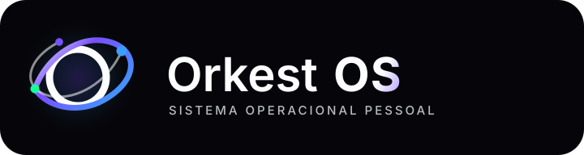
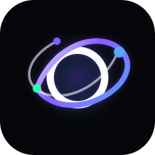
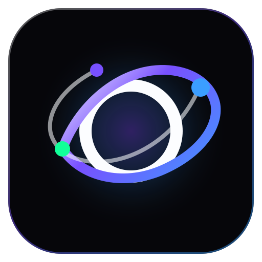

Orkest OS - proposta de logotipo
Direção Orbit OS: premium, minimalista e escalável. O símbolo representa um núcleo operacional com módulos orbitando: metas, hábitos, foco, biblioteca e FutureTwin AI.
Lockup principal

Símbolo isolado

Uso recomendado em sidebar, avatar de sistema, loading, documentação e materiais onde o nome já aparece perto.
Ícone do app

Versão quadrada para favicon, PWA, atalho mobile e cards de apresentação.
Simulação na sidebar
Teste em fundo claro